1. مأموریت ۶۰ دقیقهای
معرفی تجربه متفاوت، دو مسیر و شاخصهای اصلی
شش قاب هماهنگ از تجربه ۶۰ دقیقهای؛ معرفی مأموریت، ۱۰ مهارت، همراهی کوچ، تمرین و تصمیم، نشانها، و اختیار شرکتکننده در مدیریت سفر.

معرفی تجربه متفاوت، دو مسیر و شاخصهای اصلی

نمای کامل ده مهارت از آغاز ارتباط تا مذاکره و توافق

پیام واقعی کوچ، راهنما، بازخورد و همراهی

چالش منابع محدود، سناریو و نقشآفرینی دونفره

مدالهای واقعی زرین، سیمین و برنزی و دستاوردها

مطالعه آزاد، مکث، وقت اضافه، راهنمای امتیازی و ارائه کلاسی